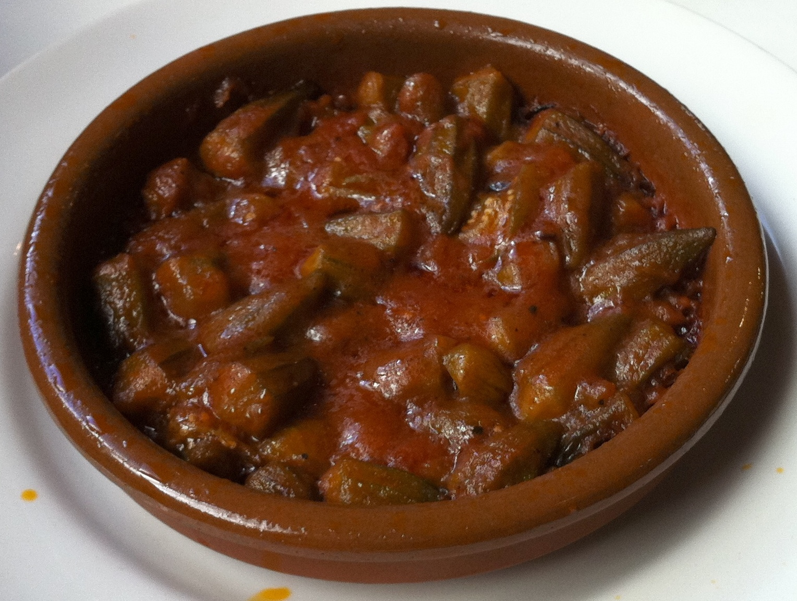

Bamia

Description:
A flavourful middle-eastern stew.
Ingredients
- 1 pound (450g) fresh okra
- 2 tablespoons olive oil
- 1 large onion, finely chopped
- 3 cloves of garlic, minced
-
1 pound (450g) lamb or beef stew meat, cut into cubes (optional)
- 1 can (14 ounces/400g) diced tomatoes
- 1 tablespoon tomato paste
- 1 teaspoon ground coriander
- 1 teaspoon ground cumin
- 1/2 teaspoon ground turmeric
- 1/2 teaspoon paprika
- 1/4 teaspoon cayenne pepper (optional, for heat)
- Salt, to taste
-
Freshly ground black pepper, to taste
-
2 cups (480ml) vegetable or beef broth
-
Chopped fresh cilantro or parsley, for garnish (optional)
- Cooked rice or Arabic bread, for serving
Instructions
- Wash the okra thoroughly and trim off the tops. If the okra is large, you can slice them into 1-inch pieces. If they are smaller, you can leave them whole.
- Heat the olive oil in a large pot or Dutch oven over medium heat. Add the chopped onion and minced garlic, and sauté until they become soft and translucent.
- If you're using meat, add the cubed lamb or beef to the pot and brown it on all sides. This step is optional if you prefer a vegetarian version of bamia.
- Add the diced tomatoes, tomato paste, ground coriander, ground cumin, ground turmeric, paprika, cayenne pepper (if using), salt, and black pepper to the pot. Stir well to combine all the ingredients and let them cook for a couple of minutes.
- Add the okra to the pot and mix it with the other ingredients. Pour in the vegetable or beef broth, ensuring that the okra is fully submerged.
- Bring the mixture to a boil, then reduce the heat to low. Cover the pot and let it simmer for about 30-40 minutes, or until the okra is tender and the flavors have melded together. Stir occasionally to prevent sticking.
- Once the bamia is cooked, taste and adjust the seasoning if needed, adding more salt or spices according to your preference.
- Serve the bamia hot over cooked rice or with Arabic bread. If desired, garnish with chopped fresh cilantro or parsley.